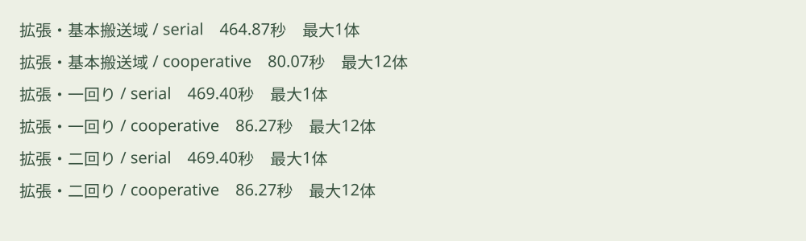
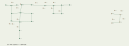
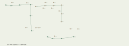
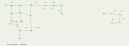
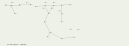
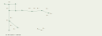
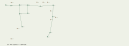
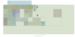
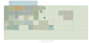
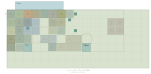

第十段階：固定水路・搬送域拡張・店舗
更新日：2026-11-11（日本時間）。独立実験。47搬送体・64可動チャンク、基本8×8×6m、生活床−12.8/0/+12.8m、搬送デッキ±6.4mを維持。
保存と再開
• GitHub：merkatzzz/tsugime-transport-lab、stage10-development。正確な完成コミットはGit履歴とSite保存版のsource.commit_shaを参照。
• 第九段階の固定タグ stage9-frozen = 24d1881a8ce34721a2bab3351cabb07c8661e433。
• 第九段階完全ZIP：stage9-frozen-source.zip。SHA256 695c035dd929cd823627ad1cdee2874ce9ba71bbe55b44372ab1c1e055add6d0。
• 第九段階ビルドは /workspace/work/stage9-frozen-build.tar.gz に保全。SHA256 e4a6851f28241008df1d3eea4577ead2c38c43b9e83305362eec955ef3982e56。
• 復元基本試験15件通過。既存ツリーを初期化せず、git worktree add --detach ../stage9-restore stage9-frozen で復元できる。
• 第九段階の比較画面はコンパクト比較コピー。完全な保全物は固定タグまたは完全ZIP。
• 現在のソースZIP。展開後 npm test、npm start。http://localhost:8000 を開く。外部CDN不要。
• サイト：https://tsugime-architecture-transport-lab.merkatzzz.chatgpt.site 。既存の閲覧範囲を維持。
固定水路
W0は第一層北端、x8.4〜56.4m、z−8.4〜−0.4mの予約域に設置。中心軸はX、長さ48m、円形断面の内径6m、中心高さは生活床+1.8m。K2北口から幅2mの短い入口を通り、南岸の幅1.65mの歩道へ進む。入口床は生活床と同じ高さ。水面は床より0.3m下。岸辺・端部・曲面に対応する歩行領域と境界を定義し、水中や搬送空間には入れない。水路端部は閉鎖。施設北側シェルを必要分だけ移動した。
W2は第二層x75.6〜83.6m、z33.6〜41.6m。P9東口と接続する。W3は第三層x16.8〜24.8m、z33.6〜41.6m。180度向きのN3ローカル西口から接続する。各8×8mの固定設備で、西側に幅2.4mの観察歩道、東側に水面を設置。幅4m・水面上1.8mの暗い暗渠開口と上部覆い、側壁、岸の立上りを設けた。チャンクの地下全体を増やす処理はない。
A/B/Cすべてで3入口の幾何学的接続が成立する。W0・W3の接続幅は2m、W2はA/Cが1.8m、Bが1.4m。W2のB周期では通常扉が閉じているとEVからの経路が閉じるため、既存の通常扉を開けて到達する。入口の余剰幅は補完壁で閉鎖する。搬送閉鎖中は固定側も遮断し、岸辺は動かない。W0内に残ったまま三周期を完走する試験も通過した。
水面は一度生成した分割面をシェーダーで波打たせ、薄い流線を移動させる。水路の長手方向へ流れる。近距離では合成水音が加わり、既存の音声開始・音量・ミュート・一時停止に従う。全管路はモデル化せずwater.jsの論理接続情報で保持する。泉・生物系統との接続はない。回収操作は追加していない。
搬送と拡張
採用設定ring1/cooperativeは134×50mから142.4×58.4mへ、東・南に各8.4m拡張。sameは125.6×41.6→134×50、ring2は142.4×58.4→150.8×66.8m。生活区域の配置を大量増設する変更はない。
上部デッキの8m角空欄を固定設備・搬送体の実占有から数えると、A/Cは94→117、Bは95→118で、各23枠増加。生活床の空欄とは別の値。空欄には生活床を生成しない。H1（二連結）が新しい東南余白x126,z50.4へ移動する経路を生成し、途中の全区間を連続衝突検査した。
水路の保守的固定予約は実メッシュの下端まで含める。最終配置、直線掃引、上下移動、回転包絡を既存の0.2m離隔判定へ登録し、計画キャッシュの識別にも含めた。水路を横切る直線・上下経路と、開始/終了では離れていても途中の回転包絡が水路に接触する負例を検査する。
全3範囲×2方式×3遷移の18計画が成立。採用設定A→B 29.8667秒、B→C 39.0667秒、C→A 17.3333秒、合計86.2667秒（第九段階77.5667秒）。水路下部を避ける実経路へ変更されたため延長した。搬送の省略や瞬間移動はない。詳細はevidence/stage10.json。
店舗とNPC
T1/T2に幅3.7×奥行0.45×高0.9mの立体カウンターと背面棚。既存の側壁・背壁・店舗屋根・作業空間を維持し、カウンター・NPC・営業用遮蔽物が貫通しない位置に配置した。店舗高2.4mはチャンク全高6mと区別する。T1は凹凸を持つ布のひだと粗い材質、T2は金属の全面シャッター。閉鎖時の前後左右・上方からの遮蔽を試験した。
生活欄で各NPCの「自室へ」「仕事場へ」「自動へ」を操作する。手動指定は自動時刻で上書きされず、保存・読込にも残る。既存の遮蔽物閉鎖完了を待って所在を変更し、訪問・会話・取引・店舗内滞在中は保留する。「NPCを隠す」は建築観察用で、生活状態は変更しない。
在室訪問では通常開き戸を閉鎖状態に保ったまま短い切替で既存の3D固定視点へ移行する。後から扉がプレイヤーへ開く処理を省略した。住人・会話・不在予定・廊下への復帰を維持。
図面・検証・制約
• 更新前：第九段階比較画面・同報告のABC三層図。更新後：本報告のABC三層図、evidence/stage10-A-level-1.svg等の9図。
• 自動テスト170件、失敗0。最終形状の重点18件も通過。自動検証は通常歩行/高速移動、扉、店舗、シャッター、主EV/居住EV、ABC同乗、H1/H2、回転、近道、地図、泉・生物、訪問、アイテム、保存・読込、固定形状、開口境界を含む。実行ログをevidenceに保存。
• 水路岸の歩行はA*で経路を求め、通常のmove処理で再生。水中の床支持拒否、入口閉鎖、W0での三周期待機、保存復元を追加検査。
• 実メッシュに対する連続掃引・開口からの多方向光線・床面重複検査を実施。管理プレビューは4173中継準備待ちで失敗し、Sites手順に従って停止した。
• WebGLの実画面、視点移動時のちらつき、自然な構図、実際の音量・聴感は未確認。CPU上のメッシュ検査や音声状態の検査を、目視・聴取済みとは扱わない。
• CPU測定は同じハーネス・1280×720相当・3周期。evidence/stage10-performance-before.jsonとafter.json。通常探索と安定後は毎フレームの形状破棄0。参考実測（第九→第十）：通常探索の平均3.090→1.497ms、3周期後の平均0.708→0.726ms・p95 1.230→1.341ms。測定環境の負荷で変動し、改善率の保証には使わない。初回構築・周期切替の瞬間的なスパイクは残る。GPU/FPSの実測ではない。
• 次段階では実WebGLによる水面材質・曲面・操作・聴感確認、初回構築/到着時の負荷改善を優先する。
搬送範囲・方式の比較図

各周期の平面図
周期 A
第3層の通路成分グラフ
第2層の通路成分グラフ
第1層の通路成分グラフ
周期 B
第3層の通路成分グラフ
第2層の通路成分グラフ
第1層の通路成分グラフ
周期 C
第3層の通路成分グラフ 第2層の通路成分グラフ
第2層の通路成分グラフ 第1層の通路成分グラフ
第1層の通路成分グラフ
遠隔区域と泉の配置
周期 A


周期 B


周期 C


各遷移の搬送経路・保管と一時退避
A→B

B→C

C→A
